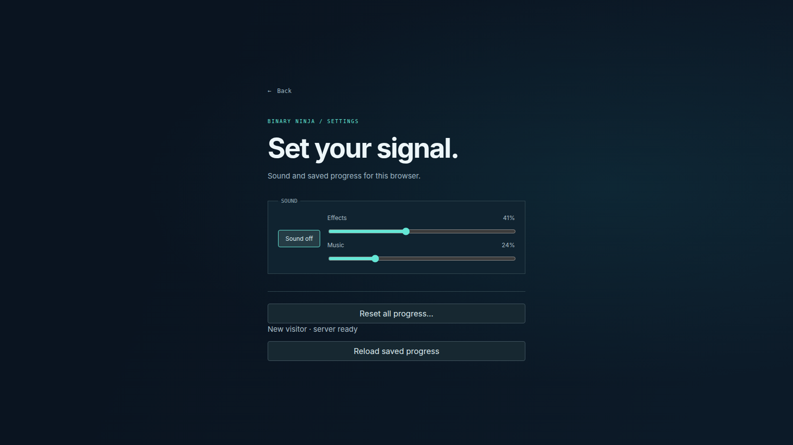

BINARY NINJA / 26 OCTOBER 2026Sound, with room to think.
Six local CC0 music selections, distinct interaction cues, and a separate streaming music player. This page is a review artifact; the game does not load it.
Review limit: browser playback and signal measurements were verified. The agent could not hear the output, so subjective musical fit, fatigue and voice-chat masking still need human listening.
Music excerpts and loop seams
Each 16-second chapter contains 12 seconds of music, then the final two seconds and first two seconds of its prepared loop. Menu 0:00 · HANDSHAKE 0:16 · CROSSFEED 0:32 · RACE 0:48 · DEADLOCK 1:04 · USE AFTER FREE 1:20.
The montage uses the mastered file levels. The default in-game Music setting attenuates these further, with quiet tutorial, pause and completion mixes.
Effects before and after
Open the timestamped comparison for switches, latches, checkpoints, breakpoint stages, the completion phrase and preserved grapple/cube references.
Main menu
Claimed by the Void — vitalezzz
HANDSHAKE
Celestial Harmony — vitalezzz
CROSSFEED VAULT
Stop For A Moment — vitalezzz
RACE CONDITION
Hyperton — Sudocolon
DEADLOCK
Algate — James Gargette / cinameng
USE AFTER FREE
Neural Malfunction — vitalezzz
Independent controls

Effects retains the old saved level. Music defaults to 35%, with a legacy zero-volume preference remaining silent. Global Sound off silences both.